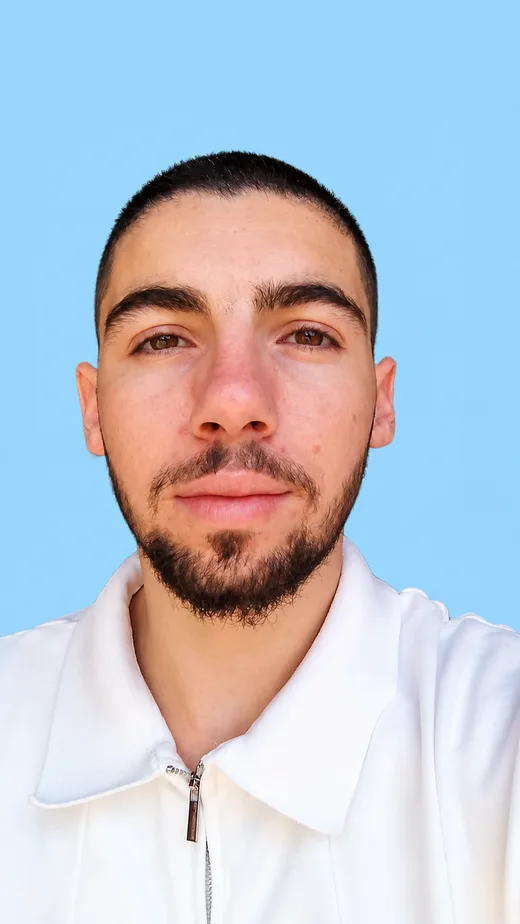

מבינים מה צריך
מה העסק עושה, מי הלקוח שלך, ומה אתה רוצה שיקרה כשמישהו נוחת על האתר.
יצירת קשר
בלי עלות ובלי התחייבות. אני שואל על העסק, אתה שואל מה שבא לך, ואם זה לא מתאים — אני אגיד לך את זה ישר.
מה העסק עושה, מי הלקוח שלך, ומה אתה רוצה שיקרה כשמישהו נוחת על האתר.
אם אתר לא יעזור לך עכשיו, או שעדיף לך משהו אחר — אני אגיד. גם אם זה אומר שלא נעבוד.
אין מכירה ואין "בוא נסגור עכשיו". אתה יוצא מהשיחה עם תשובה ברורה, ומחליט בזמן שלך.

מי אני
בונה אתרים לעסקים קטנים בכל הארץ. בניתי מעל 10 אתרים — בתי כנסת, נותני שירות, עסקים קטנים. אני עובד עם כלי AI, ולכן אני מספק במחיר שסטודיו לא מתקרב אליו, במחיר שמתאים לעסק קטן.
כשאתה כותב לי — אתה מדבר איתי. לא עם מנהל לקוחות, לא עם צוות, לא עם מישהו שמעביר הודעות. אני זה שעונה, אני זה שבונה, ואני זה שאתה יכול להתקשר אליו גם אחרי שהאתר עלה.
שאלות על השיחה
בוואטסאפ. לוחץ על הכפתור, נפתחת אצלך שיחה איתי עם הודעה מוכנה, ואתה רק שולח. אני עונה תוך כמה שעות. אין טופס למלא — ההודעה מגיעה ישירות אליי, לא למערכת.
אני שואל על העסק — מה אתה עושה, מי הלקוח שלך, ומה אתה רוצה שהאתר יעשה. אתה שואל אותי כל מה שבא לך. בסוף השיחה יש לך תמונה ברורה אם ואיך אני יכול לעזור.
בערך רבע שעה, לפעמים פחות. זה מספיק כדי להבין אם זה מתאים — ולא בזבוז זמן של אף אחד אם לא.
לא, השיחה בחינם לגמרי ובלי התחייבות. גם אם בסוף לא נעבוד יחד — יצאת עם תשובה ברורה.
אם זה מתאים, אתה מקבל ממני הצעת מחיר סגורה בכתב תוך 24 שעות — מה בדיוק ייבנה וכמה זה עולה. בלי הפתעות ובלי לחץ להחליט מיד.
לא חייב. אם יש לך אתר קיים, או אתר של מישהו אחר שאהבת — תשלח לי קישור, זה יעזור. אבל גם בלי כלום אפשר להתחיל.
כותב לי בוואטסאפ עם שם ומה העסק שלך צריך, ואני עונה תוך כמה שעות. אין טפסים ואין המתנה — ההודעה מגיעה ישר אליי.
צור קשר work71work72@gmail.com